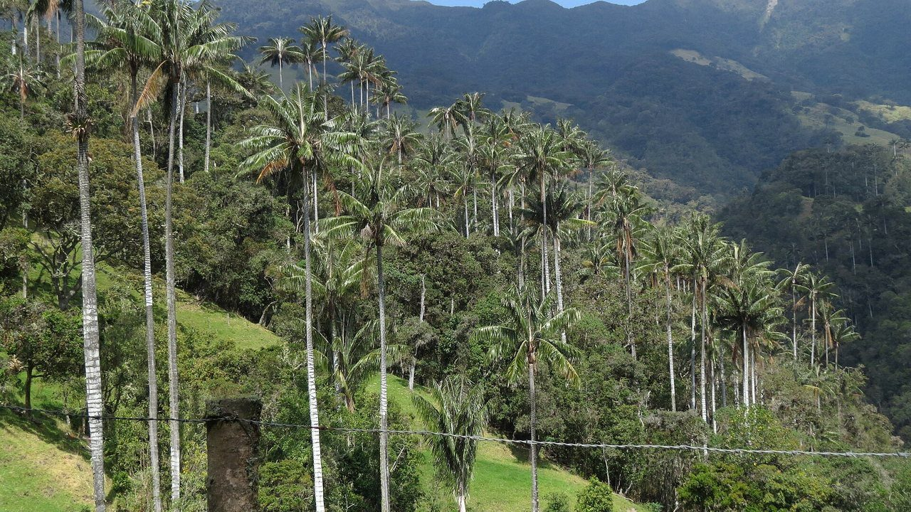

Race, Alto de Letras

Behind
Best +0:01
371W
Target 418 W-47 W
- Cadence
- 87rpm
- Heart
- 140bpm
- Speed
- 26.5km/h
Work11 of 27
1:50
Next: · 2:00 at level 11
+8.0%
355 m climbed
7.68 km
22
Resistance / 32
Solo races your best-time ghost: position reads Ahead or Behind, and solo alone gets a Pause button. Frozen at 17:10.